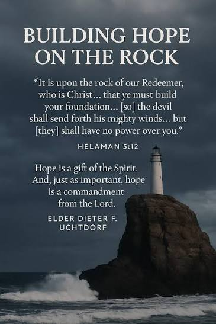
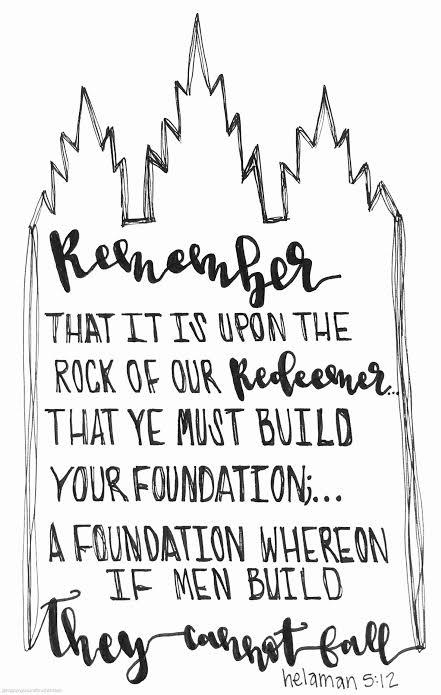
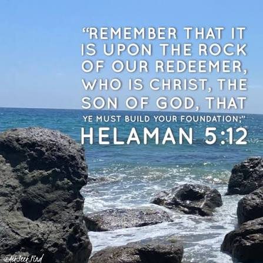
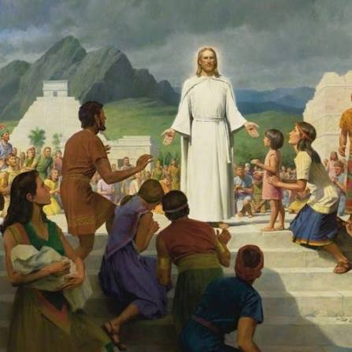

I love it beacuse it tells me to always took up to God

And now, my sons, remember, remember that it is upon the rock of our Redeemer, who is Christ, the Son of God, that ye must build your foundation; that when the devil shall send forth his mighty winds

a foundational scripture for spiritual resilience, teaching that individuals must build their lives upon the rock of Jesus Christ.

This verse outlines a promise of spiritual safety for those who build their life's foundation upon Jesus Christ, ensuring stability against the trials of the adversary, as found on LDS Living and YouTube.
The Storms of Life: Symbolizes the temptations and trials of the adversary.

The Promise: Provides assurance that anchoring one's life to Christ prevents being overwhelmed by these challenges.